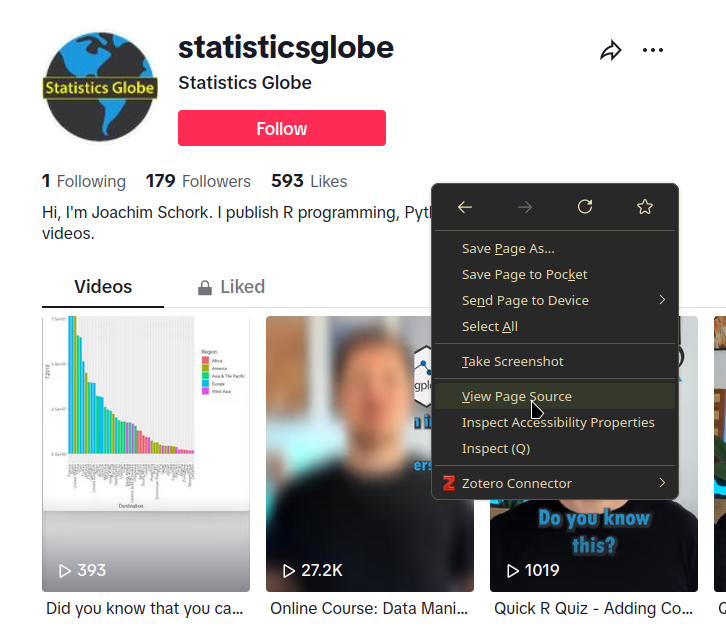
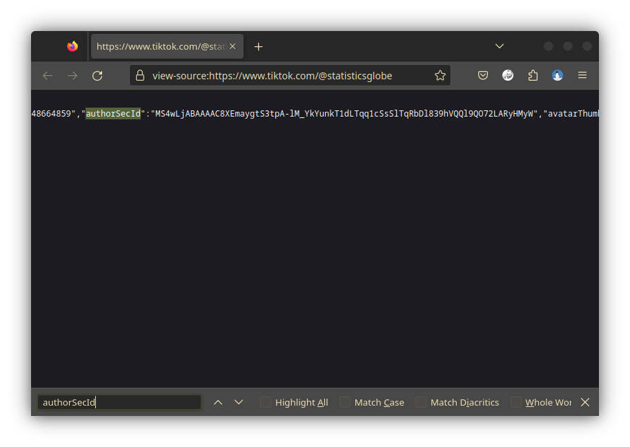

The unofficial or hidden API is essentially what the TikTok website
uses to display you content. Partly based on Deen Freelon’s
Pyktok Python module, traktok contains
functions to simulate a browser accessing some of these API endpoints.
How these endpoints work was discovered through reverse engineering and
TikTok might change how these endpoints operate at any moment. As of
writing this (2023-11-28), there are functions that can:
- search videos using a search term
- get video details and the video files from a given video URL
- get who follows a user
- get who a user is following
To use these functions, you have to log into <tiktok.com> first
and then give R the cookies the browser uses to identify
itself.
Authentication
The easiest way to get the cookies needed for authentication is to export the necessary cookies from your browser using a browser extension (after logging in at TikTok.com at least once). I can recommend “Get cookies.txt” for Chromium based browsers or “cookies.txt” for Firefox (note that almost all browsers used today are based on one of these).

Save the cookies.txt file, which will look something like this:
# Netscape HTTP Cookie File
# https://curl.haxx.se/rfc/cookie_spec.html
# This is a generated file! Do not edit.
.tiktok.com TRUE / TRUE 1728810805 cookie-consent {%22ga%22:true%2C%22af%...
.tiktok.com TRUE / TRUE 1700471788 passport_csrf_token e07d3487c11ce5258a3...
.tiktok.com TRUE / FALSE 1700471788 passport_csrf_token_default e07d3487c11...
#HttpOnly_.tiktok.com TRUE / TRUE 1700493610 multi_sids 71573310862246389...
#HttpOnly_.tiktok.com TRUE / TRUE 1700493610 cmpl_token AgQQAPORF-RO0rNtH...
...It does not matter if you download all cookies or just the
ones specific to TikTok, as we use the
cookiemonster package to deal with that. To read the
cookies into a specific encrypted file, simply use:
cookiemonster::add_cookies("tiktok.com_cookies.txt")And that’s it! traktok will access these cookies
whenever necessary.
Usage
Search videos
To search for videos, you can use either tt_search or
tt_search_hidden, which do the same, as long as you do not
have a token for the Research API. To get the first two pages of search
results (one page has 12 videos), you can use this command:
rstats_df <- tt_search_hidden("#rstats", max_pages = 2)
#>
ℹ Getting page 1
⏲ waiting 0.5 seconds
ℹ Getting page 1
✔ Got page 1. Found 12 videos. [1.9s]
#>
ℹ Getting page 2
✔ Got page 2. Found 12 videos. [690ms]
rstats_df
#> # A tibble: 24 × 20
#> video_id video_timestamp video_url video_length video_title
#> <chr> <dttm> <glue> <int> <chr>
#> 1 71151144… 2022-06-30 19:17:53 https://… 135 "R for Beg…
#> 2 72522261… 2023-07-05 07:01:45 https://… 36 "Wow!!! TH…
#> 3 72420686… 2023-06-07 22:05:16 https://… 34 "R GRAPHIC…
#> 4 72134135… 2023-03-22 16:49:12 https://… 6 "R and me …
#> 5 72576898… 2023-07-20 00:23:40 https://… 56 "Pie chart…
#> 6 72999870… 2023-11-10 23:58:21 https://… 51 "Quick R Q…
#> 7 72783048… 2023-09-13 13:40:21 https://… 36 "Quick R Q…
#> 8 73029706… 2023-11-19 00:56:09 https://… 163 "What is c…
#> 9 71670108… 2022-11-17 15:42:56 https://… 58 "Here’s an…
#> 10 72933174… 2023-10-24 00:36:48 https://… 9 "#CapCut #…
#> # ℹ 14 more rows
#> # ℹ 15 more variables: video_diggcount <int>,
#> # video_sharecount <int>, video_commentcount <int>,
#> # video_playcount <int>, video_is_ad <lgl>, author_name <chr>,
#> # author_nickname <chr>, author_followercount <int>,
#> # author_followingcount <int>, author_heartcount <int>,
#> # author_videocount <int>, author_diggcount <int>, …This already gives you pretty much all information you could want about the videos that were found.
Get metadata and download videos
However, you can obtain some more information, and importantly the
video file, using tt_videos:
rstats_df2 <- tt_videos(rstats_df$video_url[1:2], save_video = TRUE)
#>
ℹ Getting video 7115114419314560298
⏲ waiting 0.2 seconds
ℹ Getting video 7115114419314560298
✔ Got video 7115114419314560298 (1/2). File size: 2.5 Mb. [2.5s]
#>
ℹ Getting video 7252226153828584731
✔ Got video 7252226153828584731 (2/2). File size: 1.7 Mb. [999ms]
rstats_df2
#> # A tibble: 2 × 19
#> video_id video_url video_timestamp video_length video_title
#> <glue> <chr> <dttm> <int> <chr>
#> 1 711511441… https://… 2022-06-30 19:17:53 135 R for Begi…
#> 2 725222615… https://… 2023-07-05 07:01:45 36 Wow!!! THI…
#> # ℹ 14 more variables: video_locationcreated <chr>,
#> # video_diggcount <int>, video_sharecount <int>,
#> # video_commentcount <int>, video_playcount <int>,
#> # author_username <chr>, author_nickname <chr>,
#> # author_bio <chr>, download_url <chr>, html_status <int>,
#> # music <list>, challenges <list>, is_classified <lgl>,
#> # video_fn <chr>Per default, the function waits between one and ten seconds (chosen
at random) between making two calls, to not make it too obvious that
data is scraped from TikTok. You can speed up the process (at your own
risk), by changing the sleep_pool argument, which controls
the minimum and maximum number of seconds to wait:
rstats_df3 <- tt_videos(rstats_df$video_url[3:4], save_video = TRUE, sleep_pool = 0.1)
#>
ℹ Getting video 7242068680484408581
⏲ waiting 0.1 seconds
ℹ Getting video 7242068680484408581
✔ Got video 7242068680484408581 (1/2). File size: 1.8 Mb. [2.6s]
#>
ℹ Getting video 7213413598998056234
✔ Got video 7213413598998056234 (2/2). File size: 598.1 Kb. [1.7s]
rstats_df3
#> # A tibble: 2 × 19
#> video_id video_url video_timestamp video_length video_title
#> <glue> <chr> <dttm> <int> <chr>
#> 1 724206868… https://… 2023-06-07 22:05:16 34 "R GRAPHIC…
#> 2 721341359… https://… 2023-03-22 16:49:12 6 "R and me …
#> # ℹ 14 more variables: video_locationcreated <chr>,
#> # video_diggcount <int>, video_sharecount <int>,
#> # video_commentcount <int>, video_playcount <int>,
#> # author_username <chr>, author_nickname <chr>,
#> # author_bio <chr>, download_url <chr>, html_status <int>,
#> # music <list>, challenges <list>, is_classified <lgl>,
#> # video_fn <chr>When you are scraping a lot of URLs, the function might fail eventually, due to a poor connection or because TikTok is blocking your requests. It therefore usually makes sense to save your progress in a cache directory:
rstats_df3 <- tt_videos(rstats_df$video_url[5:6], cache_dir = "rstats")
#>
ℹ Getting video 7257689890245201153
⏲ waiting 1.7 seconds
ℹ Getting video 7257689890245201153
✔ Got video 7257689890245201153 (1/2). File size: 1.7 Mb. [2.6s]
#>
ℹ Getting video 7299987059417042209
✔ Got video 7299987059417042209 (2/2). File size: 1.2 Mb. [1.8s]
list.files("rstats")
#> [1] "7257689890245201153.json" "7299987059417042209.json"Note that the video files are downloaded into the dir
directory (your working directory by default), independently from your
cache directory.
If there are information that you feel are missing from the
data.frame tt_videos returns, you can look at
the raw, unparsed json data using:
rstats_list1 <- tt_request_hidden(rstats_df$video_url[1]) |>
jsonlite::fromJSON()Parsing the result into a list using fromJSON, results
in a rather complex nested list. You can look through this and see for
yourself if the data you are interested in is there
Get followers and who a user is following
Getting followers and who a user is following is (at the moment?) a little tricky to use, since TikTok blocks requests to a users profile page with anti-scraping measures. To circumvent that, you can open a users page in your browser and then right-click to show the source code:1

You can then search for and copy the authorSecId
value:

Once you have this authorSecId you can look up a maximum
of 5,000 followers per account:
tt_get_follower(secuid = "MS4wLjABAAAAwiH32UMb5RenqEN7duyfLIeGQgSIx9WtgtOILt55q6ueUXgz4gHqZC5HFx4nabPi",
verbose = FALSE)
#>
#> # A tibble: 1,116 × 27
#> avatarLarger avatarMedium avatarThumb commentSetting
#> <chr> <chr> <chr> <int>
#> 1 https://p16-sign-sg.tik… https://p16… https://p1… 0
#> 2 https://p16-sign-va.tik… https://p16… https://p1… 0
#> 3 https://p16-sign-va.tik… https://p16… https://p1… 0
#> 4 https://p16-sign-va.tik… https://p16… https://p1… 0
#> 5 https://p16-sign-va.tik… https://p16… https://p1… 0
#> 6 https://p16-sign-va.tik… https://p16… https://p1… 0
#> 7 https://p16-sign-va.tik… https://p16… https://p1… 0
#> 8 https://p16-sign-va.tik… https://p16… https://p1… 0
#> 9 https://p16-sign-va.tik… https://p16… https://p1… 0
#> 10 https://p16-sign-va.tik… https://p16… https://p1… 0
#> # ℹ 1,106 more rows
#> # ℹ 23 more variables: downloadSetting <int>, duetSetting <int>,
#> # ftc <lgl>, id <chr>, isADVirtual <lgl>, nickname <chr>,
#> # openFavorite <lgl>, privateAccount <lgl>, relation <int>,
#> # secUid <chr>, secret <lgl>, signature <chr>,
#> # stitchSetting <int>, ttSeller <lgl>, uniqueId <chr>,
#> # verified <lgl>, diggCount <int>, followerCount <int>, …Likewise, you can also check who this account follows:
tt_get_following(secuid = "MS4wLjABAAAAwiH32UMb5RenqEN7duyfLIeGQgSIx9WtgtOILt55q6ueUXgz4gHqZC5HFx4nabPi",
verbose = FALSE)
#>
#> # A tibble: 489 × 28
#> avatarLarger avatarMedium avatarThumb commentSetting
#> <chr> <chr> <chr> <int>
#> 1 https://p16-sign-va.tik… https://p16… https://p1… 0
#> 2 https://p16-sign-va.tik… https://p16… https://p1… 0
#> 3 https://p16-sign-va.tik… https://p16… https://p1… 0
#> 4 https://p16-sign-va.tik… https://p16… https://p1… 0
#> 5 https://p16-sign-va.tik… https://p16… https://p1… 0
#> 6 https://p16-sign-va.tik… https://p16… https://p1… 0
#> 7 https://p16-sign-va.tik… https://p16… https://p1… 0
#> 8 https://p16-sign-va.tik… https://p16… https://p1… 0
#> 9 https://p16-sign-va.tik… https://p16… https://p1… 0
#> 10 https://p16-sign-va.tik… https://p16… https://p1… 0
#> # ℹ 479 more rows
#> # ℹ 24 more variables: downloadSetting <int>, duetSetting <int>,
#> # ftc <lgl>, id <chr>, isADVirtual <lgl>, nickname <chr>,
#> # openFavorite <lgl>, privateAccount <lgl>, relation <int>,
#> # secUid <chr>, secret <lgl>, signature <chr>,
#> # stitchSetting <int>, ttSeller <lgl>, uniqueId <chr>,
#> # verified <lgl>, diggCount <int>, followerCount <int>, …
list.files(pattern = ".mp4") |>
unlink()
unlink("rstats", recursive = TRUE)